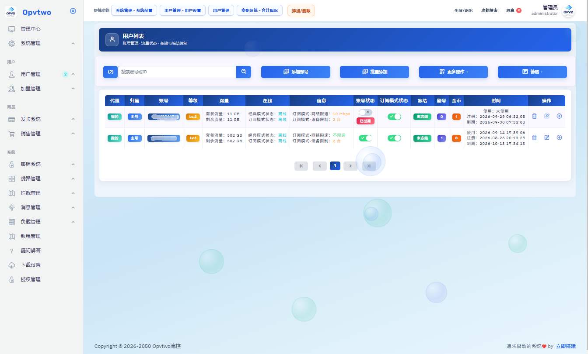
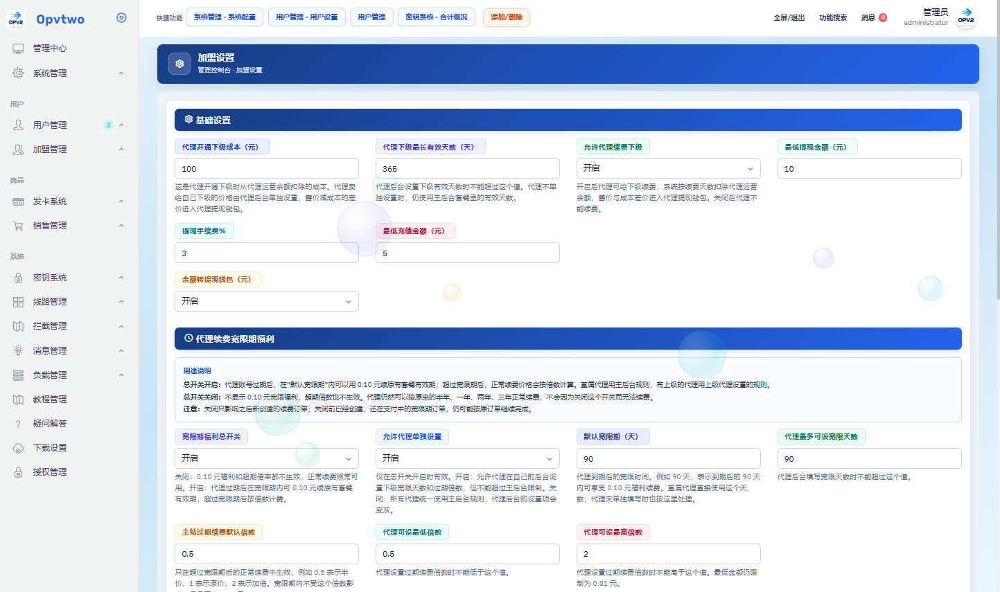
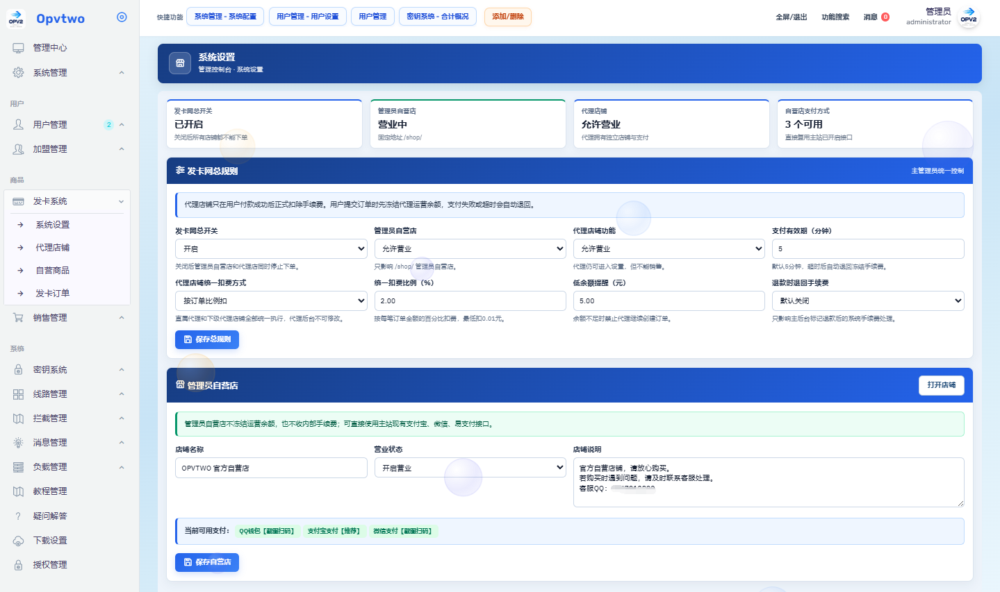
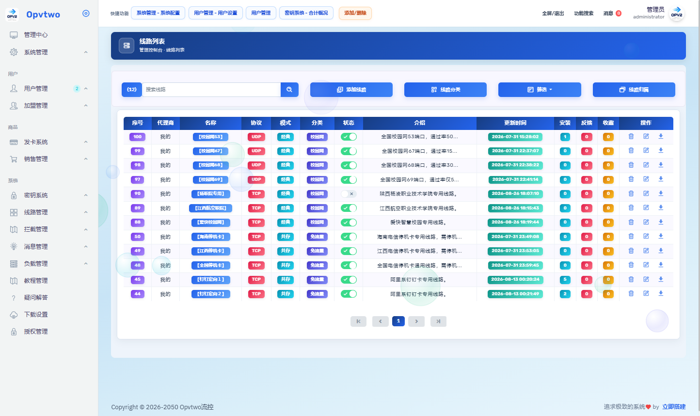
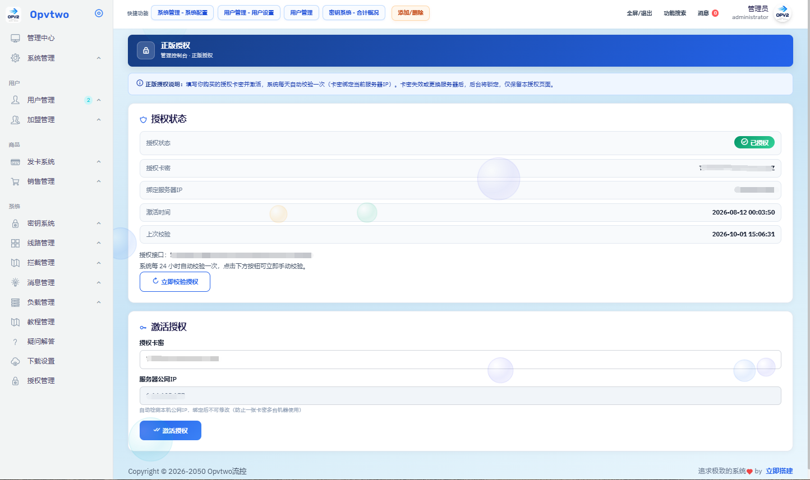

OP / V2 双内核
统一接入经典模式与订阅模式节点，集中查看节点状态、用户流量和在线情况。
OPVTWO 流控系统是面向流控运营场景的一体化管理系统。统一管理 OP 与 V2 节点、用户订阅、线路推送、五级代理分销、发卡商城和授权验证。
不是单一节点面板。OPVTWO 流控系统把用户、代理、线路、订单、密钥和授权放在同一套管理逻辑中，减少重复配置与数据割裂。
统一接入经典模式与订阅模式节点，集中查看节点状态、用户流量和在线情况。
支持注册、套餐、流量、冻结、副号、签到和订阅配置，覆盖完整用户生命周期。
开发者维护线路仓库，管理员选择分类并推送，减少手工录入和重复维护。
支持百分比分销与固定成本模式，代理可独立管理下级、套餐、商城和余额。
自营商城、代理店铺、订单、卡密和支付接口集中管理，支持退款与超时清理。
优惠活动、广告域名拦截、授权校验、过期踢线和节点权限共同构成运营保护层。
以下截图来自 OPVTWO 现有产品界面，展示管理后台的典型工作流。





GitHub 仓库只展示产品与文档，不包含核心程序、数据库结构和授权接口。部署入口和最新版本以官网为准。
Linux x86_64 环境，建议 1GB 以上内存，并使用 root 权限操作。
从 home.opvtwo.com 获取最新安装命令，避免使用来源不明的旧脚本。
按安装提示创建后台，随后配置节点、套餐、支付和代理规则。
更多部署与运营说明，请进入官网查看最新文档。
不包含。仓库只用于产品介绍、界面展示和使用文档。核心程序、数据库、授权接口与部署配置不公开。
建议使用 Linux x86_64 服务器，并以 root 权限按官方流程安装。实际版本要求以官网最新说明为准。
官网可以及时更新安装命令、版本说明、授权政策和售后联系方式，避免旧教程造成部署错误。
完整系统涉及授权与商业交付，请通过官网了解正版授权和交付方式，不要使用来源不明的安装包。